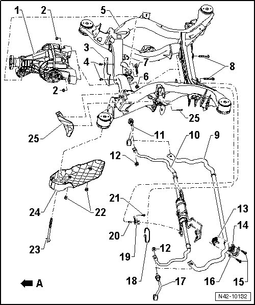

Subframe, Stabilizer Bar and Stone Deflector Assembly Overview
Subframe, Stabilizer Bar and Stone Deflector Assembly Overview
• Welding and straightening work on supporting or wheel carrying components of suspension is not permitted.
• Always replace self locking nuts.
• Always replace corroded bolts/nuts.
• If components with bonded rubber bushings were replaced or bolts/nuts on these components were loosened, corresponding wheel bearing must be lifted into curb weight position. Refer to --> [ Lifting Wheel Bearing to Curb Weight Position ] Front Suspension (AWD).
- Arrow A - direction of travel

1 Final drive
2 Self locking nut
• M12 x 1.5.
• 90 Nm + 90° additional turn.
• Always replace after removal.
3 Stone protection plate
4 Expanding rivet
5 Subframe
• Locating, refer to --> [ Subframe, Securing ] Subframe, Securing.
• Removing and installing, refer to --> [ Subframe ] Service and Repair.
• Servicing, refer to --> [ Subframe Bonded Rubber Bushing ] Service and Repair.
6 Self locking nut
• M12 x 1.5.
• 90 Nm + 90° additional turn.
• Always replace after removal.
7 Bolt
• M12 x 1.5 x 90.
• Always replace after removal.
8 Bolt
• M12 x 1.5 x 90.
• Always replace after removal.
9 Stabilizer bar
10 Separable stabilizer bar
• Removing and installing, refer to --> [ Separable Stabilizer Bar ] Separable Stabilizer Bar.
• Assembly overview, refer to --> [ Separable Stabilizer Bar Assembly Overview ] Separable Stabilizer Bar Assembly Overview.
• Bleeding, refer to --> [ Separable Stabilizer Bar, Bleeding ] Procedures.
11 Coupling rod
• Right side.
12 Self locking nut
• M12 x 1.5.
• 100 Nm.
• Always replace after removal.
13 Stabilizer bar mount
• When installing, larger outer diameter must face vehicle center.
14 Stabilizer bar mount
• When installing, larger outer diameter must face vehicle center.
15 Bolt
• M10 x 25.
• 40 Nm.
16 Clamp
17 Coupling rod
• Left side.
18 Cable tie
19 Bracket
20 Nut
21 Bolt
22 Expanding rivet
23 Bolt
• M14 x 1.5 x 135.
• 120 Nm + 180° additional turn.
24 Stone protection plate
25 Stone protection plate
26 Phillips-head screw
• M4 x 25